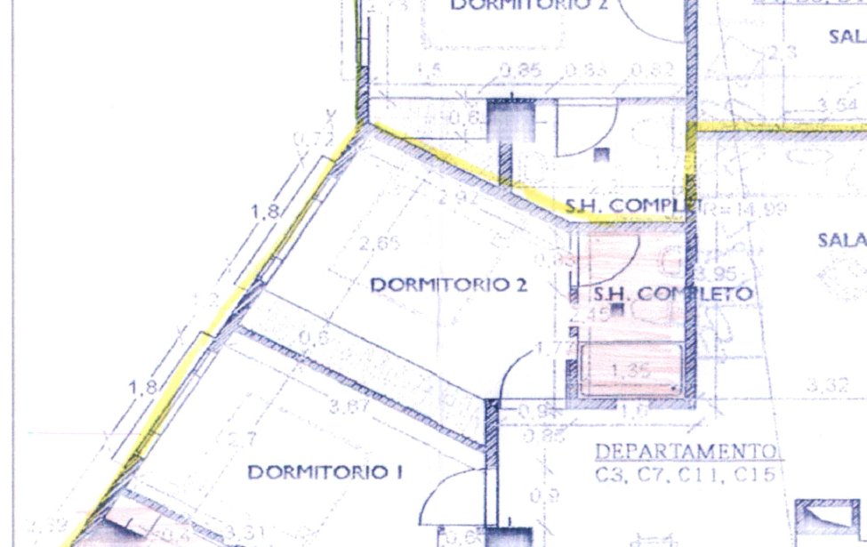
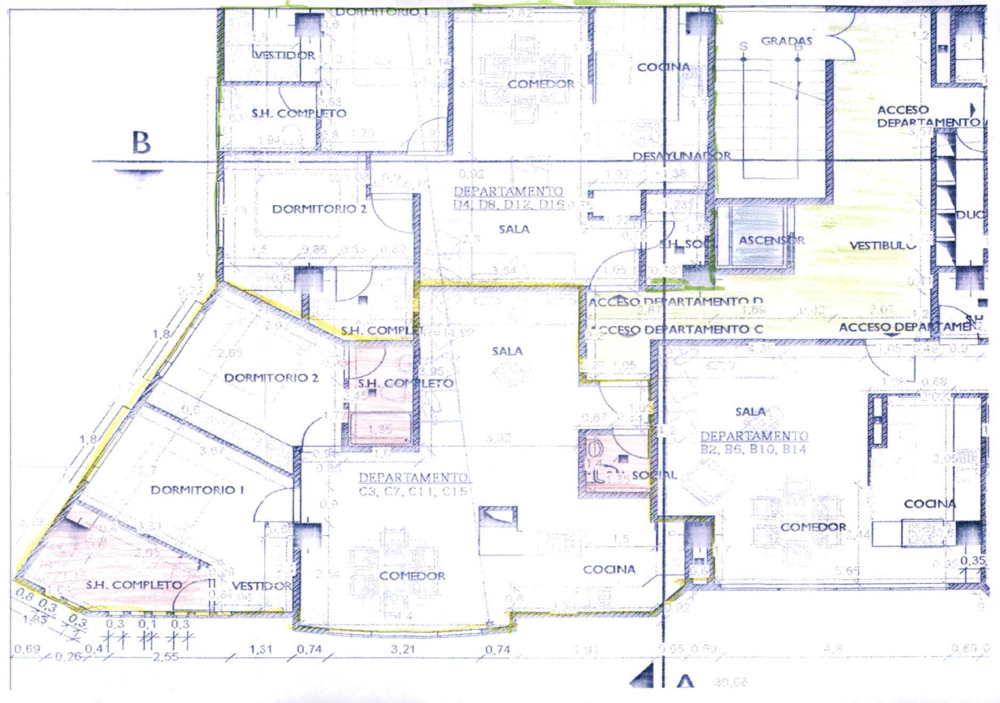
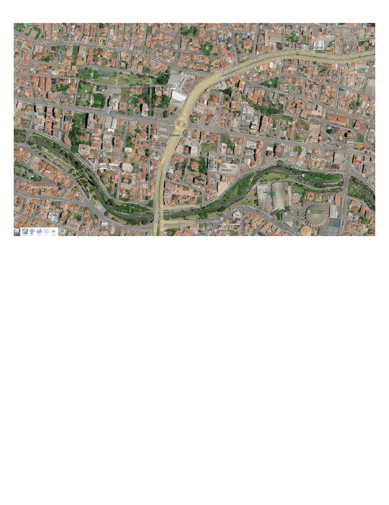

Kitchen & living
- Double sink and granite countertops
- Breakfast bar for two and dining table for six
- Refrigerator, gas cooktop, rotisserie oven and microwave
- Blender, rice cooker, toaster oven and coffee maker
Cuenca · Available now
A quiet, comfortable place to come home to after enjoying everything Cuenca has to offer.
Ask about this homeWelcome home
Condo 303 was furnished as a comfortable home for everyday living rather than as a short-term vacation rental. It works well as a first base from which to explore Cuenca, plan your next step, and settle into the city. Its convenience may also make it the place you choose to stay longer.
Most daily needs are close at hand. Supermaxi, pharmacies, banks, restaurants, Todo Hogar, and the Tranvía are within easy walking distance. The Tomebamba River path is also nearby for walking, running, or cycling.
Although centrally located, the condo sits well above street level, giving it a noticeably quieter feel than many homes in similarly convenient locations.
A rare advantage
The building's backup generator serves the condominium's outlets, not merely elevators and common areas. For remote work, reliable internet, refrigeration, and normal day-to-day living, this is a major practical advantage.
Photo gallery
These placeholders will be replaced as soon as the photographer's download is available.
Floor plan

This is the architect's source drawing. A simplified presentation floor plan will replace it in the next revision.
Why the location works

Tranvía and airport access


Property details
Rental terms
Shorter-term leases may be available at adjusted rates.
What to expect
We maintain the property responsibly and respond to legitimate maintenance needs. In return, we ask tenants to care for the home, handle ordinary routine tasks, and communicate respectfully and promptly.
Interested?
Contact us to ask questions or arrange a viewing.
Erika
English / Español
WhatsApp 099-901-9832
Roland
English
Call 093-954-2394